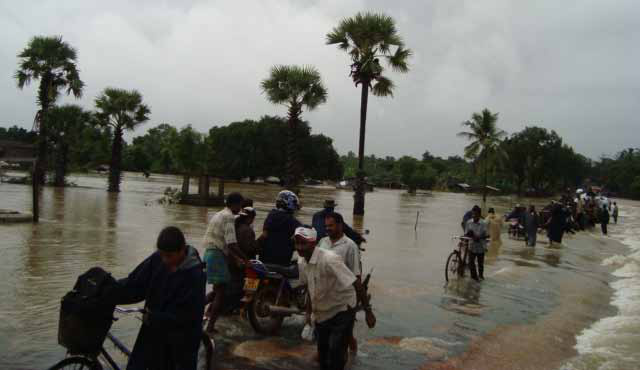
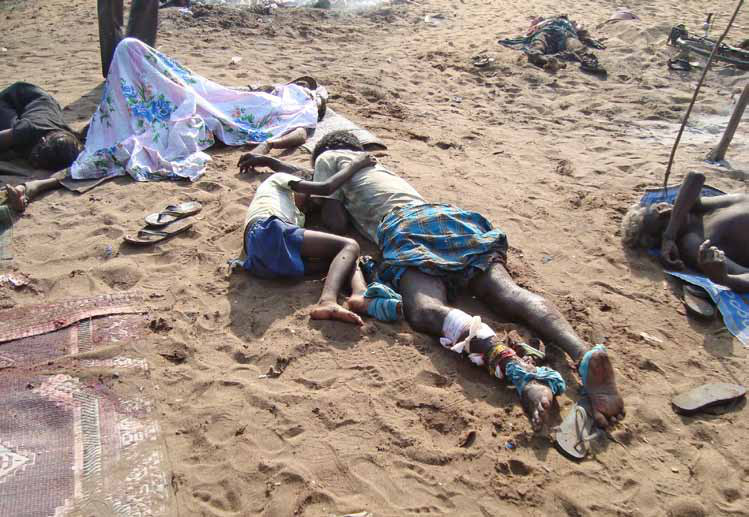
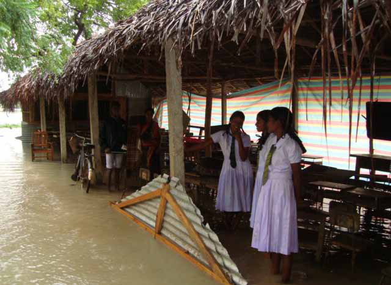
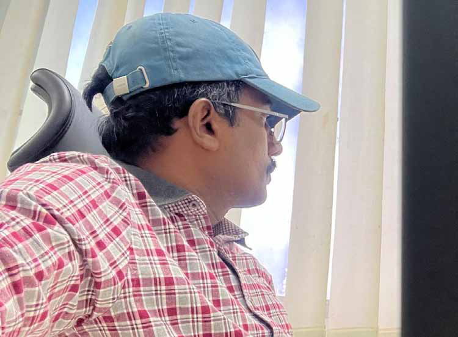

Humanitarian
Humanitarian
Jaffna Monitor
hellojaffnamonitor@gmail.com
30
N
iththilan (name changed), a former
courageous United Nations worker,
witnessed the harrowing scenes of Sri Lanka's
final war in 2009. Among the few living
who can testify to the devastating atrocities
committed by both the Sri Lankan government
and the LTTE, he played a crucial role in the
conflict's final stages. In September 2008,
after the directive for the evacuation of UN
and international humanitarian organizations
from LTTE-controlled territories, Niththilan
was appointed as the officer in charge of
all UN operations in the region. He led the
UN mission within LTTE-controlled areas,
directing local staff in the absence of his
international colleagues. Currently residing in
Europe, Niththilan has decided to break his
silence and share his experiences with 'Jaffna
Monitor' under the condition of anonymity.
You have repeatedly mentioned that
former LTTE heavyweight Elilan was
a brutal child abductor and a war
criminal. Could you elaborate on this?
In early March 2009, as the Sri Lankan
civil war reached its devastating climax,
thousands who had fled from different parts
of Vanni, including Mannar, sought refuge
in the northern region's last remnants of
LTTE-controlled territory. These displaced
people settled in the narrow coastal strip
BY:
Kaniyan Pungundran
fzpad; G+q;Fd;wd;
Diaries
A UN Worker's Exclusive Testimony to
'Jaffna Monitor' on the 15th Anniversary
of Sri Lanka's Brutal War Conclusion
Part-2
Humanitarian
Interview
Jaffna Monitor hellojaffnamonitor@gmail.com 31
Jaffna Monitor hellojaffnamonitor@gmail.com 32 encompassing Puthumathalan, Pokkanai, Valaignarmadam, and Mullivaikkal. This shrinking enclave, measuring a mere 400 meters in width and extending 5-6 kilometers in length, became the final bastion of Tamil Eelam. In Valaignarmadam, a Catholic church became a sanctuary during the final days of the Sri Lankan civil war. Over 400 families, seeking refuge from the chaos, gathered within the church compound, which welcomed people of all religions. The parents, desperate to protect their children from the brutal abduction teams of the LTTE, hid them within the Church's confines. Armed only with sticks and poles, they guarded the Church, determined to keep the LTTE out. Displaced Catholic clergy from the vast Vanni region, including priests and nuns, also found shelter on the premises connected to the Church. The parents believed the sanctity of the Church would shield their children, naively trusting that the LTTE would not violate the holy grounds. They stood vigilant, refusing entry to anyone who might threaten their children's safety, ready to defend them with whatever means they had. The Church challenged the LTTE's authoritarianism. The LTTE, who desired absolute power, had never allowed anyone to question them. Throughout their decades of rule, they made it clear that no one could raise a voice against them. However, this half- acre church compound defied their authority. Parents, defying LTTE orders, were hiding their children there and went a step further by guarding the church premises from the LTTE's brutal abduction teams with sticks and poles. Near the Church stood the temporary office of the Mullaitivu Government Agent, Parthiban. Parthiban, who is now in Switzerland, often received visits from my colleagues and me, especially when United Nations food supplies arrived. We would hand them over to him first, ensuring that the aid reached those in need. One fateful day, I went to discuss arrangements for an expected ship arrival in 2-3 days. I was engulfed by a wave of chaos as I approached his office. The desperate cries of youths echoed through the air, a heart-wrenching sound that pierced my soul. I saw 4 to 5 buses parked there, an unusual and alarming sight. My heart sank as the horrifying realization dawned upon me—this was an abduction operation. The LTTE had breached the sanctity of the Church, intent on tearing away the children and youth sheltered there. When I arrived, the LTTE, heavily armed and clad in protective gear, had brought the majority of their remaining forces from Vanni. They resembled a full-scale military invasion, but tragically, their target was not an enemy force but their own innocent youths. The leader of this brutal abduction team was Ezhilan. I recognized Ezhilan immediately. We were from the same Divisional Secretariat (DS) division in Jaffna. He was a well-known volleyball player who represented the Avarangal Central Sports Club. I had known him only as a peaceful and good-hearted young man. But now, Ezhilan looked like an evil child abductor, ready for full combat and willing to go to any lengths to abduct children. He wore body armor and protective gear, carrying two guns: a pistol in his hand and an AK-47 slung over his shoulder. He had come to abduct children as if he were going to war. When I approached him, Ezhilan saw me and seemed to feel ashamed. He turned his face
Jaffna Monitor hellojaffnamonitor@gmail.com 33 and stepped aside, unable to meet my eyes. I heard horrifying sounds as the LTTE mercilessly beat the parents who were desperately trying to protect their children. The anguished cries of the parents, mixed with the sickening thud of blows landing, created a cacophony of terror. Blood ran through the corridors, staining the sacred ground of the Church. In their brutal assault, the LTTE showed no regard for the sanctity of the place; a few statues of Jesus and Mary were vandalized. The once peaceful Church was transformed into a scene of chaos and violence. Amidst this devastation, the LTTE forcibly abducted the innocent children, dragging them away from the arms of their pleading parents. The desperate parents fought back as best they could, but they were no match for the heavily armed militants. The LTTE didn't shoot anyone but fired into the air and savagely beat the parents, behaving like wild animals and treating the parents no better. The LTTE's brutality knew no bounds as they ruthlessly overpowered the defenseless families. On that dreadful day, the LTTE abducted nearly 400 children from the church premises. These children, who sought refuge in the sacred space, were torn from their families' arms and thrust into the clutches of a losing war. It's important to remember that, at that time, the LTTE's territory had shrunk to a mere few kilometers. The end was clearly in sight, and any sane person would understand the imminent total annihilation of the LTTE. Yet, the LTTE forcibly abducted children for a war they were destined to lose. Knowing their days were numbered, the LTTE leadership, instead of facing their inevitable defeat with dignity, chose to drag innocent lives into their doomed struggle to save themselves. In a horrifying act of self-preservation, they sacrificed innocent children, displaying a monstrous contempt for humanity and decency. When I was in Vanni, I always wore the UN uniform to identify myself as a UN worker, carrying a UN radio with an antenna and a

Jaffna Monitor hellojaffnamonitor@gmail.com 34 satellite telephone. On that horrific day, as the LTTE herded the children onto the buses, the children saw me and recognized me from my clothes. The sight of my familiar uniform sparked a desperate glimmer of hope in their eyes. They began shouting and crying out for help, their voices filled with terror and desperation. "Anna, please save us, save us," they cried. Their pleas still echo in my mind to this day. I stood there, paralyzed by a mixture of helplessness, rage, and despair, unable to do anything to stop the abduction. The sight of those children, torn from their families and thrust into a nightmare, was more than I could bear. By my estimation, at least 400 children were abducted by Ezhilan from the Valaignarmadam church that day alone. Overall, he abducted thousands of children and sent them forcefully into the jaws of the multibarrel shells. Today, Ezhilan's wife, Ananthi Sasitharan, is a prominent advocate for the disappeared, but her husband bears the responsibility for the disappearance of those 400 children on that single day. The weight of those lost children, their stolen futures, and the endless grief of their families are a burden that Ezhilan and his wife must carry forever. Ezhilan, who surrendered to the army in the final battle, remains on the missing persons list. Since the end of the war, Ananthi, who has been searching for her husband, has appeared in numerous international forums, emphasizing the tragedy of missing persons. She does not, however, speak out about her husband's forcible abduction and disappearance of minor children. I would salute and support her if she accepted the fact that her husband was a brutal child abductor responsible for the kidnapping of hundreds of children and fought for those made to disappear by her husband. You mentioned that all the Catholic clergy in the Vanni region were in that Church at the time of the abduction. Why didn't they intervene and stop the brutal abduction? It's true that while these atrocities were happening, all the fathers and sisters of the Vanni region who were present there were hiding. No one came out to speak against the brutal actions of the LTTE. None of the clergy stepped forward to tell the LTTE not to do this inside the Church, not to abduct children, or not to vandalize the statues. Instead, they were hiding inside the Church, remaining silent in the face of such brutality. Why didn't you intervene? In a sense, I was paralyzed with fear. Had I intervened, the LTTE would have definitely killed me on the spot. What happened to those 400 children? I believe the vast majority of those abducted were killed on the battlefield. Almost all of them were forced to fight on the front lines with only a few days of training. How can one imagine that children, with minimal preparation and without the will to fight, could stand on the front lines with guns, facing sophisticated military shells and gunfire? We heard that you were the one who proposed the no-fire zone. Can you tell us about it?
Jaffna Monitor hellojaffnamonitor@gmail.com 35 Yes, I proposed the no-fire zone during the intense fighting in Kilinochchi in mid- December 2008. As the war intensified, the area from Kandavalai Junction to Theravil Junction became densely populated with displaced people. Most of the displaced chose to settle in Tharmapuram, Visuvamadu, and nearby places. From Tharmapuram junction to Visuvamadu junction, a makeshift town emerged, created by the displaced population. Along Tharmapuram Road, shop signs bore the names of other cities and villages from the Vanni region, such as Mangulam, Murigandi, and Kilinochchi. The LTTE offices and the remaining NGOs were also situated in this area. During the height of the conflict, the district secretariat moved to Tharmapuram. In one of our coordination meetings, I proposed establishing a no-fire zone from Kandavalai junction to Theravil Pond, a stretch spanning 6 kilometers. Despite initial scepticism, no one objected to my plan. I quickly drafted a one-page proposal and sent it to the UN coordinator for Sri Lanka. I secured the support of the GA of Mullaitivu, Vethanayagam, the director of education, and several other key officials. Within 30 minutes, I received a positive response from my office. I submitted this proposal in December 2008, but the government did not respond immediately. By January 2009, on Thai Pongal day, the Visuvamadu and Tharmapuram areas were displaced as the army captured Kandavalai. A harrowing yet tragically common scene of Mullaitivu during the early months of 2009, showcasing the devastating aftermath of indiscriminate shelling.

Jaffna Monitor hellojaffnamonitor@gmail.com 36 On January 20th, I received a late-night call from my superior at the UN. "Your proposal has been approved by the government of Sri Lanka," she said. "The government has agreed to a no-fire zone, but the boundaries are different from what you proposed. The government announced boundaries from Theravil Kulam to Suthanthira Puram junction." Although these boundaries differed from my original proposal, I was elated because people, including us (UN workers), had already moved to that area. Overjoyed, I announced the news to the general public. The relief and happiness were palpable; people believed they could finally sleep peacefully. Many came to my temporary shelter to confirm the news. I felt immense pride and joy, knowing my proposal had made a difference and that I could finally do something meaningful for my people. However, at that time, I did not understand the government's true intention behind announcing the no-fire zone. What happened after the establishment of the no-fire zone? The next day, all radio channels, including Ilankai Vanoli (Sri Lankan Radio), repeatedly announced the establishment of a no-fire zone. Civilians believed wholeheartedly that this would alleviate their suffering and reduce the deaths of non-combatants, allowing them to finally sleep peacefully without the threat of indiscriminate shelling. People from all areas flocked to the no-fire zone, spreading out
Jaffna Monitor hellojaffnamonitor@gmail.com 37 tarpaulins and living there without building bunkers for safety. Despite the announcement, the LTTE continued to operate within the no-fire zone as usual, with camps and offices already established before the declaration. Initially, the LTTE refrained from attacking the army from within the zone. However, the LTTE's brutal child abduction teams continued their forced conscription activities even within the designated no-fire area. What were the conditions and challenges faced within the no-fire zone? Though the Sri Lankan government had proclaimed the no-fire zone, the specific conditions and limitations were not communicated to the UN. We eagerly awaited this information, as the zone was established at the UN's request. Unfortunately, the UN did not have an official agreement or discussions about the no-fire zone with the Sri Lankan government, which was a significant oversight on our part. Ideally, both parties in a conflict should refrain from using or carrying weapons in a no-fire zone. However, this was not the case here, as the LTTE maintained weapons, camps, and offices inside the zone, and forced conscription continued unabated. We established our UN hub in a playground at the Suthanthirapuram junction within the no-fire zone. In this expansive area, spanning 5-6 acres, we established our UN hub and a civilian distribution point for the goods brought by the UN convoy. At that time, the A temporary school in the war zone

Jaffna Monitor hellojaffnamonitor@gmail.com 38 last UN food convoy arrived with around 50 trucks loaded with supplies. Six international staff members entered the war zone, but four left. Two stayed: Karun Khan, a Bangladeshi national working in the UN Department of Security, and Peter, a UN operations specialist, who remained with the intention of evacuating the UN staff. They took the risk and stayed with us at the UN hub. In the UN hub, we constructed a bunker with the help of locals for the safety of our two international staff. We shared the GPS location of the UN hub with the army through our Vavuniya office. Although it was a no-fire zone, we deemed it necessary to share our location for added security. What happened after the announcement of the no-fire zone? About a week after the announcement, there were no incidents or shelling within the no-fire zone. However, one night, around 2 o'clock, the army began shelling the no-fire zone. I can confirm that all the shelling was targeted solely at the no-fire zone because the Sri Lankan government and army were fully aware of its boundaries and our UN hub's GPS location. The initial calm was shattered by the sudden and intense bombardment. Shells rained down on the no-fire zone and our UN hub, creating chaos and panic. The shelling was so intense that it prevented us from reaching the safety of our bunkers. Instead, we were forced to hide under and near the UN lorries, seeking any cover we could find. Some staff members managed to reach the bunkers, but many of us were caught in the open, exposed to the deadly barrage. The civilians in the no-fire zone had taken no precautions, fully trusting the Sri Lankan government's announcement. They hadn't dug a single bunker, believing that the no-fire zone would keep them safe. The trust placed in the government's word proved fatal. On the first day of the attack, around 16 civilians died within the UN hub alone. The situation was even more dire in other areas of the no-fire zone. Based on my estimation, approximately 150 people were killed during the first day of shelling. The aftermath was devastating. Bodies lay scattered across the area, the sounds of weeping and cries for help echoing through the night. The once hopeful and relatively safe haven had turned into a scene of horror and despair. The trust the civilians had placed in the no-fire zone was brutally betrayed, leading to a tragic loss of innocent lives. The experience left us all shaken, with the haunting realization that the supposed safe zone had become a deadly trap for those seeking refuge. What was the impact on the UN staff and subsequent events? Fortunately, no UN staff died during the initial shelling, but a few were injured. Our UN vehicles were littered with human remains, a grim reminder of the attack's brutality. This was a clear violation and a war crime committed by the Sri Lankan government. We repeatedly communicated with them, pleading for the shelling to stop. However, the next day, the army shelled the no-fire zone again. On the second day, the situation escalated further. The LTTE, now desperate and enraged, retaliated from within the no-fire zone. This only intensified the conflict. The army's shelling became even more relentless. That day, around 350 people died in the no-fire
Jaffna Monitor hellojaffnamonitor@gmail.com 39 zone. The scenes were horrifying, with civilians caught in the crossfire, unable to escape the relentless bombardment. In total, more than 500 people were killed by the indiscriminate shelling over the two days. Were those attacks on the no-fire zone intentional? Absolutely, yes. There were deliberate and intense attacks on the no-fire zone targeting civilians. What was the real motive of the Sri Lankan government to attack the no- fire zone? I believe the then-government sought revenge against Tamil civilians who had supported the LTTE, aiming to teach them a brutal lesson. It wasn't just retaliation; it was a calculated strategy to ensure no group like the LTTE would ever rise again. By inflicting severe punishment on the general public who had long supported the LTTE, they aimed to crush any future support for such movements. The government blatantly disregarded the rules of war, knowing full well that 90 percent of the population in the no-fire zone were civilians. Yet, they shelled the area mercilessly. It was a deliberate, heartless assault on the general public meant to send a clear, chilling message. The sheer brutality was designed to break the spirit of any potential resistance, to instill a deep, paralyzing fear. To be continued...
